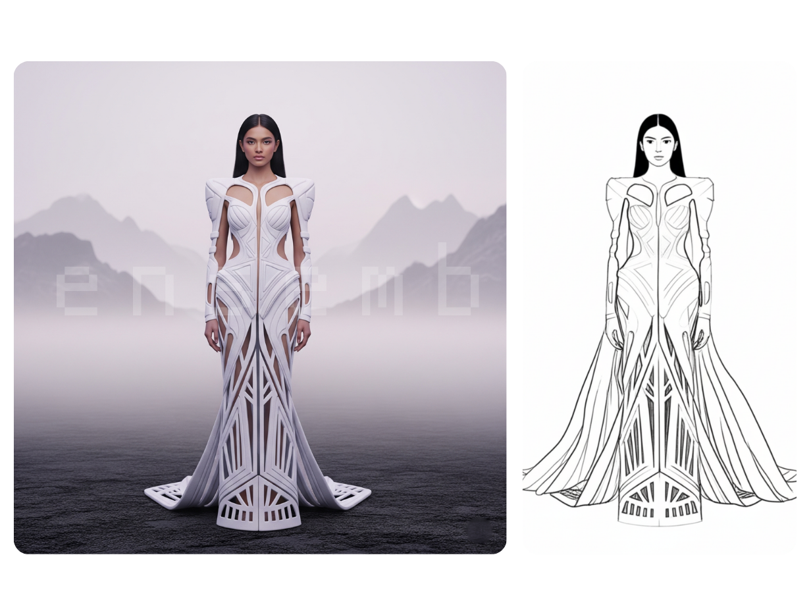
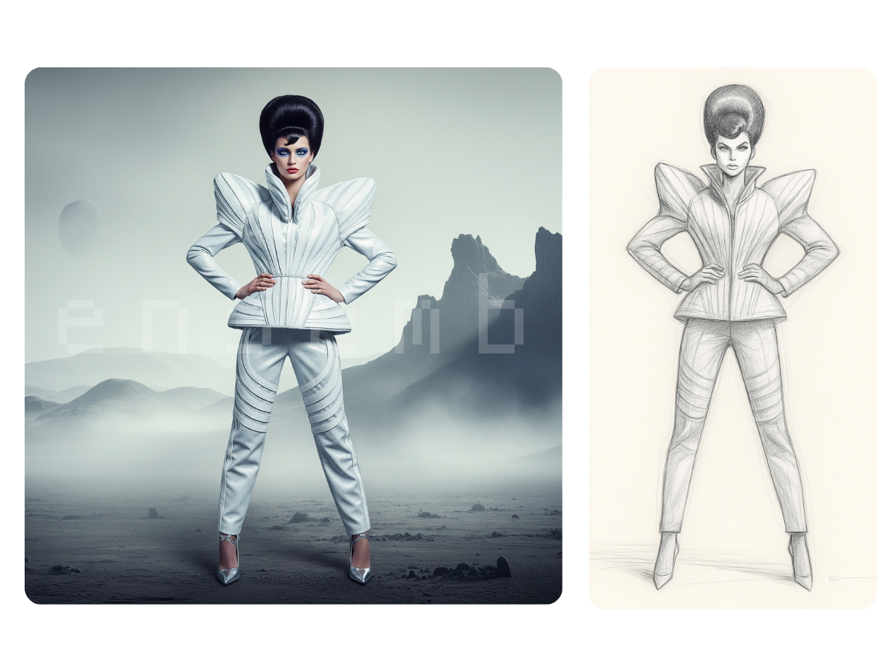
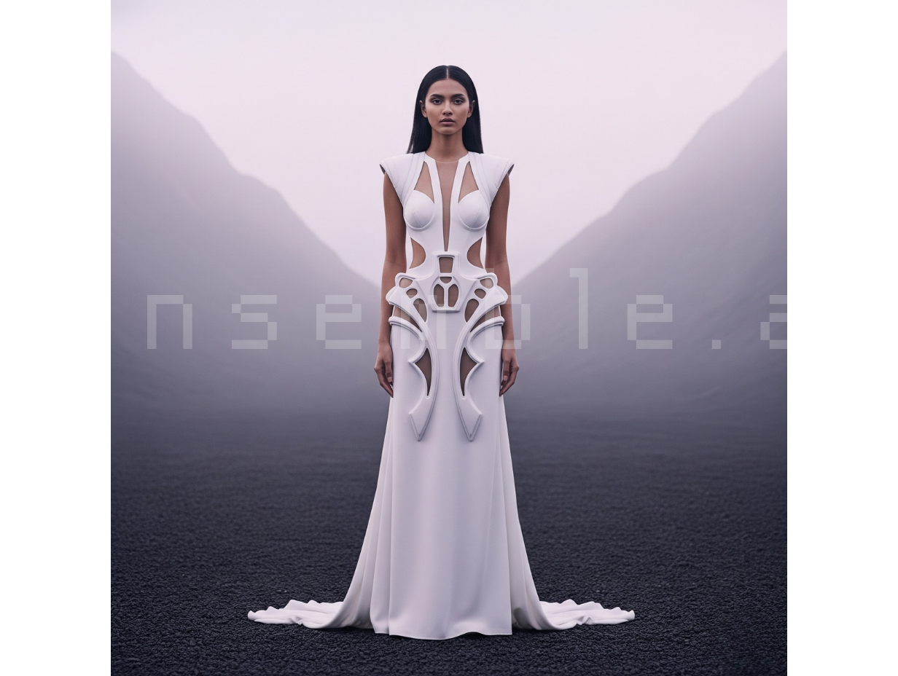
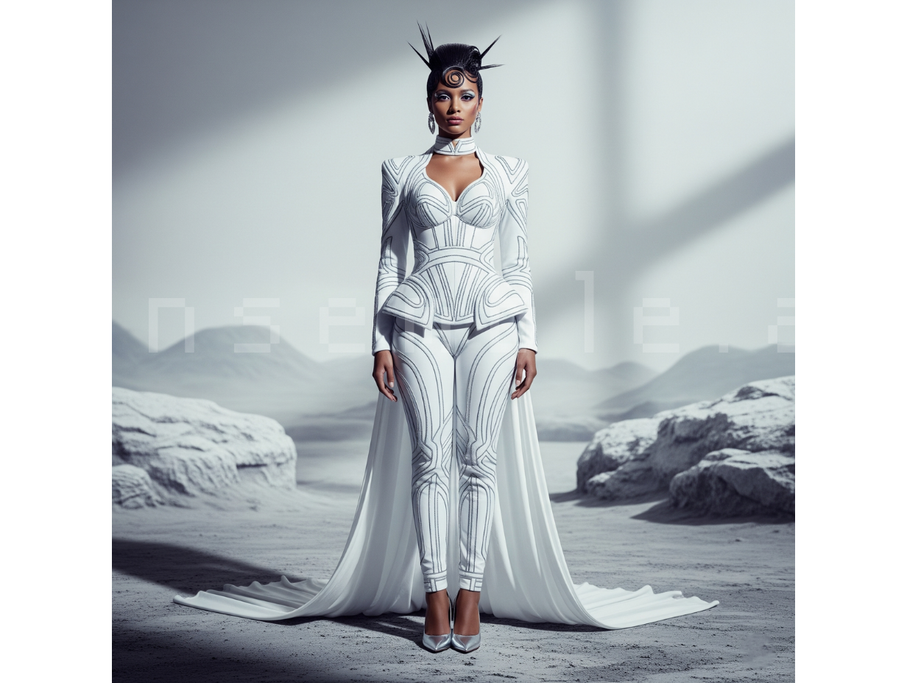
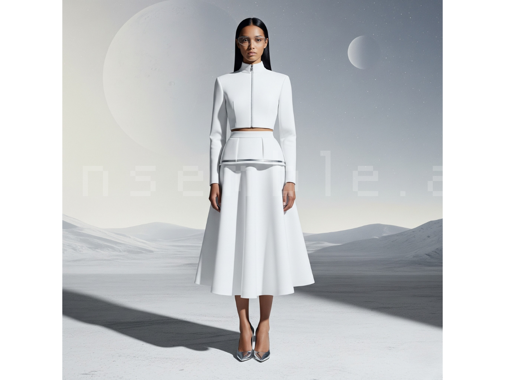
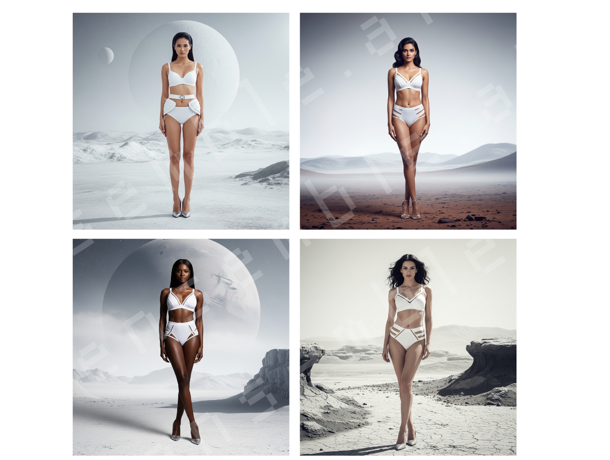

Ensemble.ai






Overview
Ensemble.ai is a conceptual AI fashion startup exploring the future of sustainable couture, generative design, and personalized luxury fashion. The project imagines a world where anyone can describe a garment in natural language and instantly generate a photorealistic 3D design, ready for customization, production, and purchase. Designed for fashion enthusiasts, designers, stylists, and luxury brands, Ensemble.ai combines AI, sustainable materials, and inclusive design to challenge today's fast-fashion industry while reimagining how clothing is created.
The Problem
Fashion has become increasingly driven by mass production and rapidly changing trends. As global retailers compete to produce clothing faster and cheaper, originality is often replaced with repetition, contributing to environmental waste and a loss of creative identity.
Research consistently points to several challenges shaping the industry today:
- Fast fashion contributes significantly to textile waste, with millions of tons of clothing ending up in landfills each year.
- Trend cycles have become shorter, encouraging overconsumption and disposable clothing.
- Fashion campaigns and magazines often feature similar aesthetics, reducing representation of diverse body types, ages, ethnicities, and personal styles.
- Independent designers face high production costs and lengthy design cycles before bringing a concept to life.
- Consumers increasingly want sustainable products but struggle to find options that combine luxury, innovation, and environmental responsibility.
The opportunity was to imagine how AI could make custom fashion more creative, inclusive, and sustainable without sacrificing craftsmanship or artistic expression.
Constraints
As an early-stage startup concept, several constraints shaped the project.
- Limited budget compared to traditional fashion houses.
- AI-generated designs needed to feel editorial and believable rather than overly futuristic.
- Sustainability remained a core business requirement, requiring concepts built around recycled textiles, ocean plastics, plant-based materials, and cruelty-free alternatives.
- The platform needed to appeal to both professional designers and everyday consumers with no design experience.
- The experience had to simplify an otherwise complex creative process while preserving user creativity.
Process
The project began by studying trends across luxury fashion houses, fashion editorials, runway collections, and emerging AI creative tools. I explored how AI could become a creative collaborator rather than simply an image generator.
Research included:
- Competitive analysis of luxury fashion brands and digital fashion platforms.
- Review of sustainability reports and circular fashion initiatives.
- Analysis of runway trends and editorial photography.
- Exploration of AI-assisted concept generation and rapid prototyping workflows.
Through multiple rounds of experimentation, I refined prompts, silhouettes, material textures, color palettes, lighting, and model diversity to create imagery that felt cinematic, premium, and future-facing.
Rather than designing clothing around current trends, the creative direction focused on timeless statement pieces inspired by architecture, nature, biomimicry, space exploration, and sculptural forms.
A lightweight UX approach also informed how users would move from idea to finished garment—simply describing their vision in plain language before reviewing AI-generated concepts, customizing details, and previewing garments in interactive 3D.
Solution
Ensemble.ai reimagines fashion as an intelligent design platform rather than a traditional clothing retailer.
Users begin by typing a prompt such as:
"Design an elegant emerald evening gown inspired by northern lights using recycled ocean plastics with architectural pleats."
Within seconds, AI generates multiple high-fidelity concepts complete with realistic materials, construction details, and 3D visualizations.
The platform allows users to:
- Generate couture concepts from simple prompts.
- Customize silhouettes, fabrics, colors, and embellishments.
- Preview garments in photorealistic 3D.
- Explore diverse AI-generated models across different ages, ethnicities, body types, and abilities.
- Produce garments using sustainable recycled and cruelty-free materials.
Instead of encouraging disposable fashion, Ensemble.ai promotes intentional design by creating made-to-order pieces that reduce excess inventory and material waste.
The result is a platform where creativity becomes more accessible while sustainability remains central to every design decision.
Design Principles
The project was guided by four core principles:
Design Without Limits
Creativity begins with imagination—not manufacturing constraints.
Sustainability by Default
Every garment is designed using environmentally conscious materials and produced only when needed.
Representation Matters
Fashion should celebrate individuality by reflecting diverse cultures, identities, body types, and personal styles.
AI as a Creative Partner
Artificial intelligence accelerates ideation while leaving artistic direction and storytelling in the hands of the designer.
Business Impact (Concept)
Although Ensemble.ai is a conceptual startup, the following metrics represent realistic business goals for an AI-powered fashion platform.
Outcome
Ensemble.ai demonstrates how AI can reshape the future of luxury fashion by making couture more creative, inclusive, and sustainable. The project highlights the intersection of artificial intelligence, visual storytelling, environmental responsibility, and digital product thinking while imagining a future where fashion is no longer defined by fast trends, but by originality, craftsmanship, and conscious innovation.